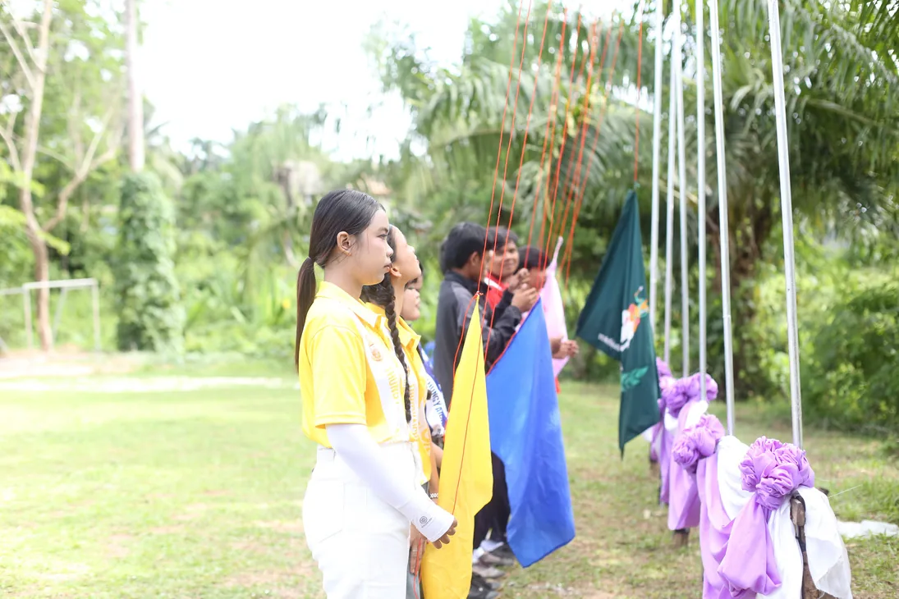
01
กันนิกา บุตรกริม
คณะมนุษยศาสตร์และสังคมศาสตร์ สาขารัฐศาสตร์ · มหาวิทยาลัยราชภัฏสุราษฎร์ธานี
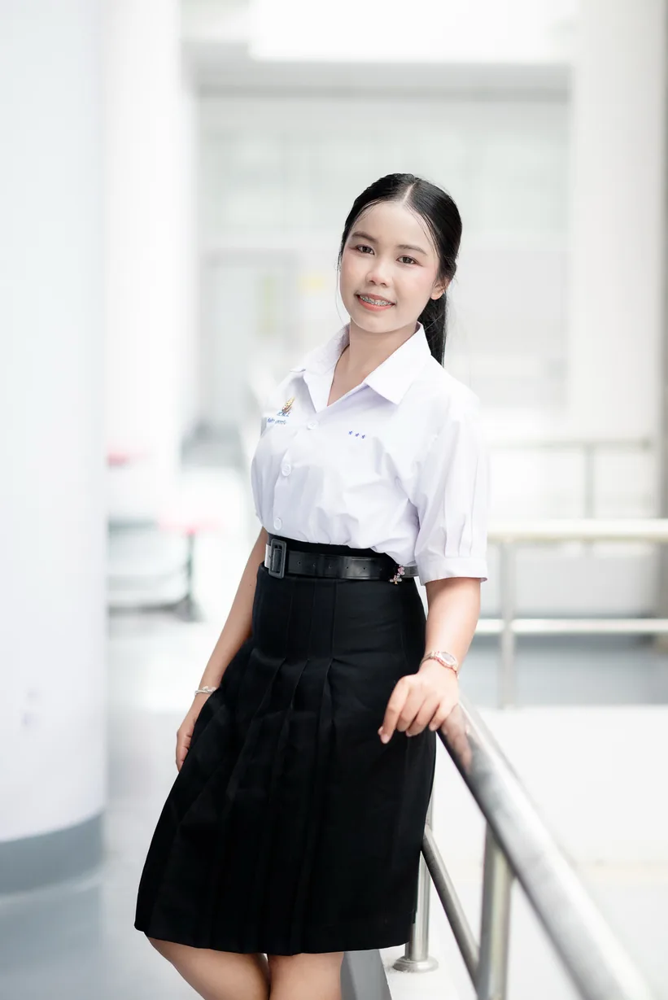
ความมุ่งมั่น
ดิฉัน นางสาวกันนิกา บุตรกริม ปัจจุบันกำลังศึกษาระดับชั้นมัธยมศึกษาปีที่ 6 เหตุผลที่ดิฉันเลือกเรียนคณะมนุษยศาสตร์และสังคมศาสตร์ สาขารัฐศาสตร์ เพราะเป็นคณะที่ดิฉันใฝ่ฝัน ดิฉันเป็นผู้ที่มีความสนใจในด้านสังคม การเมือง การบริหาร และการพัฒนาชุมชน มีความตั้งใจที่จะเรียนรู้และพัฒนาตนเองอยู่เสมอ ทั้งด้านวิชาการ การทำงานร่วมกับผู้อื่น และการมีจิตสาธารณะ
ดิฉันเชื่อว่าการศึกษาด้านรัฐศาสตร์จะช่วยให้มีความรู้ ความเข้าใจเกี่ยวกับการปกครอง กฎหมาย สิทธิและหน้าที่ของพลเมือง รวมถึงสามารถนำความรู้ไปประยุกต์ใช้ในการพัฒนาสังคมและประเทศชาติได้ในอนาคต
ด้วยเหตุนี้ ดิฉันจึงมีความมุ่งมั่นที่จะเข้าศึกษาในคณะมนุษยศาสตร์และสังคมศาสตร์ ณ มหาวิทยาลัยราชภัฏสุราษฎร์ธานี เพื่อพัฒนาความรู้ ความสามารถ และประสบการณ์ พร้อมทั้งเตรียมความพร้อมสู่การประกอบอาชีพที่สามารถสร้างประโยชน์ให้แก่สังคมและส่วนรวม
หวังเป็นอย่างยิ่งว่า Portfolio เล่มนี้จะสะท้อนให้เห็นถึงความตั้งใจ ความรับผิดชอบ และศักยภาพของดิฉัน ขอขอบพระคุณคณะกรรมการทุกท่านที่สละเวลาในการพิจารณาค่ะ
ประวัติส่วนตัว
- ชื่อเล่น
- อาย
- วันเกิด
- 2 พฤษภาคม 2552
- แผนการเรียน
- ศิลป์ทั่วไป
- สัญชาติ
- ไทย
จุดเด่น
- มีความเป็นผู้นำ
- มีทักษะการแก้ปัญหา
- มีทักษะการสื่อสารที่ดี
- มีวินัยและความรับผิดชอบ
ความสามารถพิเศษ
- ลีดเดอร์เชียร์
- ออกแบบผลงานและตัดต่อ
ติดต่อ
- 096-768-5866
- IG ka.kannikaa08
- Facebook กันนิกา ฯ.
ประวัติการศึกษา
- มัธยมศึกษาตอนปลายโรงเรียนทุ่งใหญ่เฉลิมราชอนุสรณ์ รัชมังคลาภิเษก
- มัธยมศึกษาตอนต้นโรงเรียนเมืองกระบี่
- ประถมศึกษาโรงเรียนอนุบาลกระบี่
- อนุบาลศึกษาโรงเรียนอนุบาลกระบี่
2.33ผลการเรียนเฉลี่ย 4 ภาคเรียน
กิจกรรม
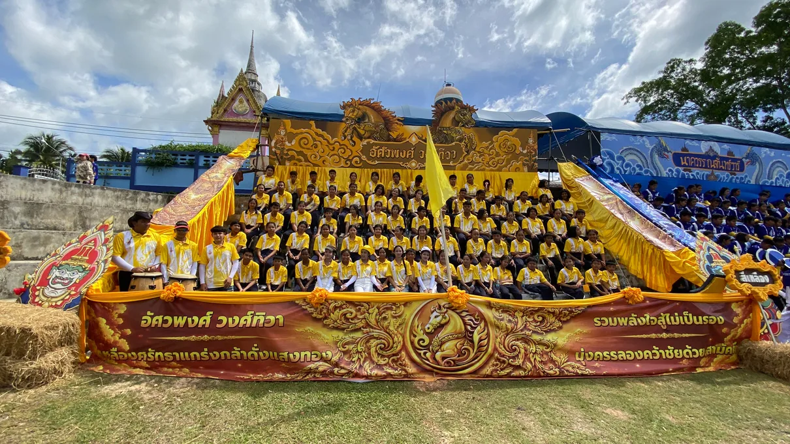
กีฬาสีของโรงเรียน ได้รับมอบหมายเป็นเหรัญญิกและผู้ช่วยผู้นำเชียร์ของคณะสีเหลือง
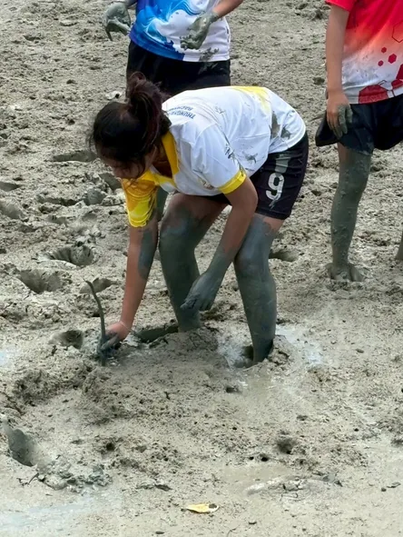
จิตอาสาปลูกป่าชายเลน ร่วมกับวิสาหกิจชุมชนและชุมชนบ้านหน้าทับ
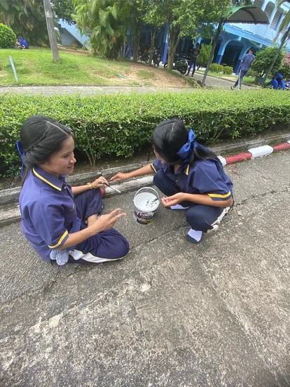
กิจกรรมทาสีบำรุงโรงเรียน
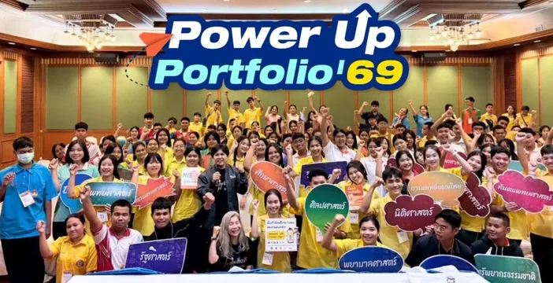
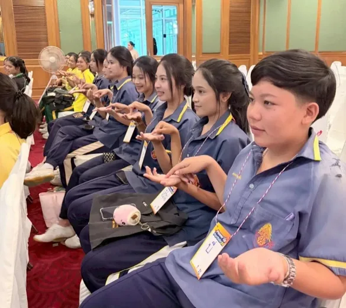
การแข่งขันฟุตบอลประจำโรงเรียน
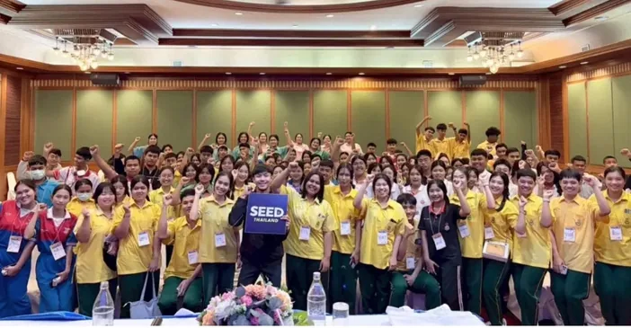
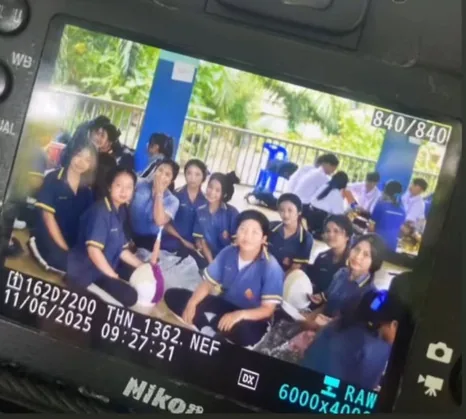
การแข่งขันวอลเลย์บอล ภาคเรียนที่ 1
เกียรติบัตร
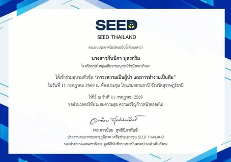
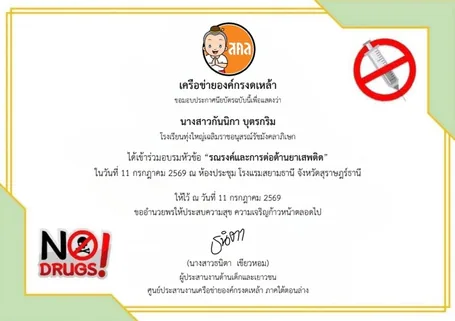
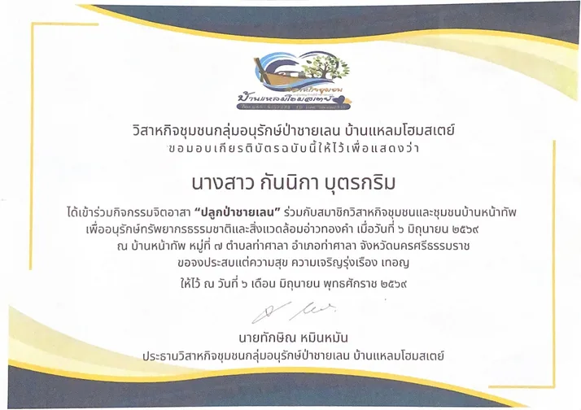
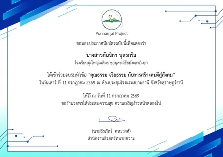
02
ปุญญิศา อินทระ
คณะวิทยาการจัดการ สาขาวิชาบริหารธุรกิจ วิชาเอกการจัดการทั่วไป · มหาวิทยาลัยราชภัฏสุราษฎร์ธานี
ความมุ่งมั่น
ในโลกของการทำงานที่มีการเปลี่ยนแปลงอย่างรวดเร็วและเต็มไปด้วยการแข่งขัน ทักษะการบริหารจัดการไม่ได้เป็นเพียงเรื่องของการทำธุรกิจ แต่คือหัวใจสำคัญในการสร้างความยั่งยืนให้แก่องค์กรและสังคม ข้าพเจ้า นางสาวปุญญิศา อินทระ มีความสนใจอย่างแรงกล้าที่จะเข้าศึกษาในสาขาวิชาบริหารธุรกิจ วิชาเอกการจัดการ คณะวิทยาการจัดการ มหาวิทยาลัยราชภัฏสุราษฎร์ธานี เพื่อต่อยอดศักยภาพของตนเองสู่การเป็นบุคลากรที่มีคุณภาพและพร้อมขับเคลื่อนเศรษฐกิจในอนาคต
ตลอดระยะเวลาที่ผ่านมา ข้าพเจ้าได้มีโอกาสฝึกฝนและพัฒนาทักษะด้านการจัดการ ผ่านการทำกิจกรรมและการทำงานร่วมกับผู้อื่น ข้าพเจ้ามีความเชื่อมั่นว่าทักษะการประสานงาน การแก้ปัญหาเฉพาะหน้า และการทำงานเป็นทีม เป็นองค์ประกอบพื้นฐานที่สำคัญของการบริหารงานอย่างเป็นระบบ ประสบการณ์เหล่านี้ไม่เพียงแต่ทำให้ข้าพเจ้าเข้าใจถึงความสำคัญของกระบวนการวางแผนและการตัดสินใจที่ถูกต้อง แต่ยังหล่อหลอมให้ข้าพเจ้าเป็นคนที่พร้อมเปิดรับการเรียนรู้สิ่งใหม่ ๆ และปรับตัวให้เข้ากับสถานการณ์ที่ท้าทายอยู่เสมอ
มหาวิทยาลัยราชภัฏสุราษฎร์ธานี เป็นสถาบันการศึกษาที่มีชื่อเสียงและมีความโดดเด่นในด้านการผลิตบัณฑิตที่ตอบโจทย์ความต้องการของตลาดแรงงานในภูมิภาค ข้าพเจ้ามีความประทับใจในหลักสูตรที่มุ่งเน้นการบูรณาการความรู้ทางทฤษฎีควบคู่ไปกับการฝึกปฏิบัติจริงของคณะวิทยาการจัดการ ซึ่งข้าพเจ้าเชื่อมั่นว่าสภาพแวดล้อมทางวิชาการและองค์ความรู้ที่ได้รับจากคณาจารย์ผู้ทรงคุณวุฒิ จะช่วยเปิดโลกทัศน์และเสริมสร้างทักษะทางวิชาชีพที่จำเป็นให้แก่ข้าพเจ้าได้อย่างครบถ้วน
เป้าหมายสูงสุดของข้าพเจ้าภายหลังจากการสำเร็จการศึกษา คือการนำความรู้ด้านการจัดการธุรกิจไปประยุกต์ใช้ในการประกอบวิชาชีพอย่างมืออาชีพ ไม่ว่าจะเป็นการบริหารงานในองค์กรชั้นนำหรือการริเริ่มธุรกิจส่วนตัว โดยข้าพเจ้าตั้งใจที่จะมุ่งเน้นการดำเนินงานที่มีประสิทธิภาพและมีจริยธรรม ข้าพเจ้าพร้อมที่จะทุ่มเทแรงกายแรงใจในการศึกษาเล่าเรียน พัฒนาศักยภาพตนเองอย่างต่อเนื่อง และมีส่วนร่วมในกิจกรรมต่าง ๆ ของมหาวิทยาลัย เพื่อสร้างประโยชน์ทั้งต่อตนเองและสังคมให้สมกับเป้าหมายในการเป็นนักบริหารรุ่นใหม่
ข้าพเจ้าหวังเป็นอย่างยิ่งว่า คณะกรรมการจะพิจารณาให้โอกาสข้าพเจ้าได้เป็นส่วนหนึ่งของสาขาวิชาบริหารธุรกิจ คณะวิทยาการจัดการ มหาวิทยาลัยราชภัฏสุราษฎร์ธานี เพื่อที่ข้าพเจ้าจะได้ทำตามความฝันในการพัฒนาตนเอง และนำความรู้ความสามารถไปสร้างคุณค่าให้แก่สังคมและประเทศชาติต่อไปในอนาคต
ประวัติส่วนตัว
- ชื่อเล่น
- ปุญ
- วันเกิด
- 30 พฤศจิกายน 2550
- สัญชาติ
- ไทย
ความสามารถพิเศษ
- การประสานงาน
- การแก้ไขปัญหาเฉพาะหน้า
- การปรับตัว
- เล่นกีฬา
งานอดิเรก
- งานอาสาสมัครและกิจกรรมกลุ่ม
- อ่านหนังสือ
- ทำอาหาร
- เล่นกีฬา
ประวัติการศึกษา
- มัธยมศึกษาตอนปลายโรงเรียนทุ่งใหญ่เฉลิมราชอนุสรณ์ รัชมังคลาภิเษก
- มัธยมศึกษาตอนต้นโรงเรียนสุขสวัสดิ์วิทยา
- ประถมศึกษาโรงเรียนวัดนาหมอบุญ
2.34เกรดเฉลี่ยสะสม (GPAX)
กิจกรรม
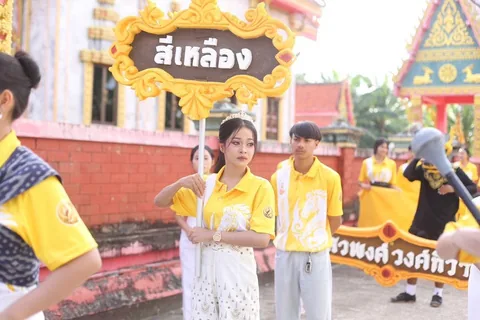
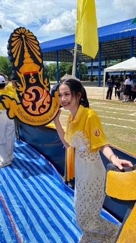
ตัวแทนถือป้ายสี กิจกรรมกีฬาสี
การเข้าร่วมกิจกรรมกีฬาสีถือเป็นอีกหนึ่งประสบการณ์ที่สำคัญที่ช่วยขัดเกลาทักษะการทำงานร่วมกับผู้อื่นของดิฉัน การได้รับหน้าที่เป็นตัวแทนถือป้ายสี ไม่เพียงแต่ต้องใช้ความรับผิดชอบในการฝึกซ้อม แต่ยังรวมถึงการประสานงานและการวางแผน เพื่อให้กิจกรรมของสีดำเนินไปได้อย่างราบรื่นและประสบความสำเร็จ ประสบการณ์นี้ทำให้ดิฉันได้เรียนรู้เรื่องภาวะผู้นำ (Leadership) การแก้ไขปัญหาเฉพาะหน้า และที่สำคัญที่สุดคือพลังของความสามัคคี ซึ่งเป็นหัวใจสำคัญในการขับเคลื่อนองค์กรให้ไปสู่เป้าหมายที่ตั้งไว้
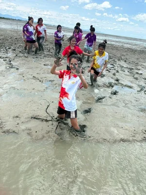
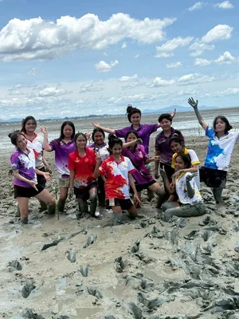
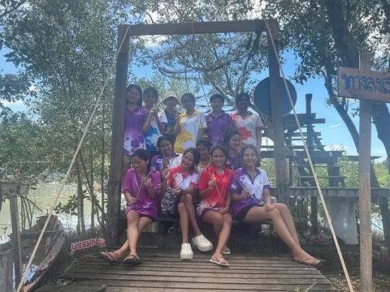
จิตอาสาปลูกป่าชายเลน
นอกเหนือจากกิจกรรมภายในโรงเรียนแล้ว ดิฉันยังได้มีโอกาสเข้าร่วมโครงการจิตอาสา 'ปลูกป่าชายเลน' ซึ่งถือเป็นประสบการณ์ที่เปิดมุมมองใหม่ในการทำงานเพื่อสังคม การลงมือปฏิบัติจริงในพื้นที่ป่าชายเลนไม่เพียงแต่ทำให้ดิฉันได้เห็นถึงความสำคัญของการอนุรักษ์ทรัพยากรธรรมชาติและสิ่งแวดล้อม แต่ยังสอนให้ดิฉันเข้าใจว่า การทำงานให้สำเร็จต้องอาศัยทั้งความมุ่งมั่นและความร่วมมือจากทุกฝ่าย ดิฉันตั้งใจที่จะนำบทเรียนนี้ไปประยุกต์ใช้ในการสร้างสรรค์ธุรกิจที่ใส่ใจต่อสังคมและสิ่งแวดล้อมอย่างยั่งยืนในอนาคต
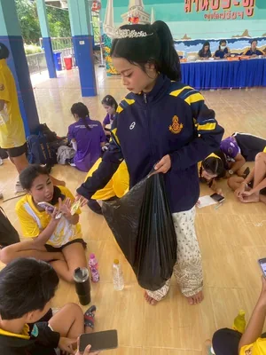
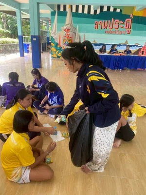
แบ่งปันขนมให้น้อง ๆ นักเรียน
ภาพความประทับใจในช่วงพักเที่ยงของกิจกรรมจิตอาสา ที่ดิฉันได้มีโอกาสนำขนมไปแบ่งปันให้แก่น้อง ๆ นักเรียน กิจกรรมเล็ก ๆ นี้สอนให้ดิฉันเห็นคุณค่าของการเป็นผู้ให้ และพลังของการแบ่งปันเพียงเล็กน้อยที่สามารถสร้างรอยยิ้มที่ยิ่งใหญ่ได้ ประสบการณ์นี้ไม่เพียงแต่ทำให้ดิฉันได้ใกล้ชิดกับน้อง ๆ มากขึ้น แต่ยังเป็นเครื่องเตือนใจให้เห็นถึงความสำคัญของความเห็นอกเห็นใจ (Empathy) ซึ่งเป็นทักษะที่สำคัญอย่างยิ่งในการเป็นนักบริหารที่ใส่ใจต่อผู้ใต้บังคับบัญชาและเพื่อนร่วมงานในอนาคต
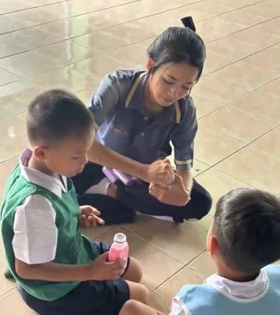
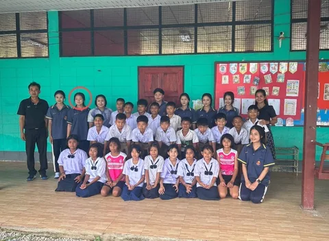
ส่งมอบน้ำดื่ม โรงเรียนคลองหมื่นเพชรอนุสรณ์
ภาพกิจกรรมการส่งมอบน้ำดื่มให้แก่น้อง ๆ ระดับชั้นอนุบาล ณ โรงเรียนคลองหมื่นเพชรอนุสรณ์ เป็นช่วงเวลาที่ดิฉันได้สัมผัสถึงความสุขจากการเป็นผู้ให้ กิจกรรมในครั้งนี้ไม่เพียงแต่ฝึกฝนให้ดิฉันมีจิตบริการ (Service Mind) และความอ่อนน้อม แต่ยังเป็นโอกาสในการฝึกฝนทักษะการสื่อสารกับเด็กเล็ก ซึ่งต้องใช้ความอดทนและความเข้าใจ ประสบการณ์เหล่านี้ช่วยหล่อหลอมให้ดิฉันเป็นนักบริหารที่ตระหนักถึงความสำคัญของการดูแลเอาใจใส่ผู้ร่วมงานและลูกค้าด้วยความจริงใจ ซึ่งเป็นรากฐานของการสร้างความสัมพันธ์ที่ดีในอนาคต
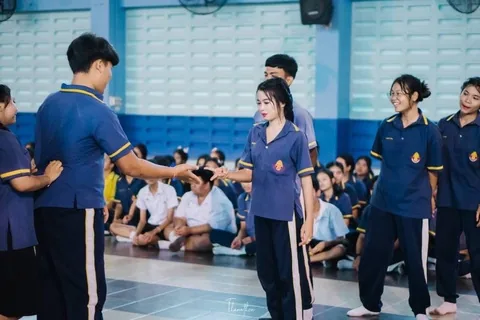
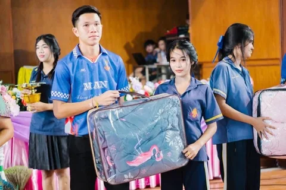
ตัวแทนร่วมกิจกรรมวันปีใหม่ของโรงเรียน
การได้รับคัดเลือกเป็นตัวแทนร่วมกิจกรรมวันปีใหม่ของโรงเรียน ถือเป็นโอกาสอันดีที่ดิฉันได้ทำหน้าที่เป็นตัวกลางในการส่งต่อความสุขและสร้างบรรยากาศที่ดีภายในงาน กิจกรรมนี้ทำให้ดิฉันได้ฝึกฝนทักษะการสื่อสารและการทำงานร่วมกับผู้อื่น ในบรรยากาศที่ผ่อนคลายแต่ยังคงความรับผิดชอบ การมีส่วนร่วมในกิจกรรมเหล่านี้ไม่เพียงแต่ช่วยพัฒนามนุษยสัมพันธ์ของดิฉันให้ดียิ่งขึ้น แต่ยังสะท้อนถึงความพร้อมในการเป็นบุคลากรที่มีความกระตือรือร้นและสามารถปรับตัวเข้ากับวัฒนธรรมองค์กรที่หลากหลายได้อย่างราบรื่น
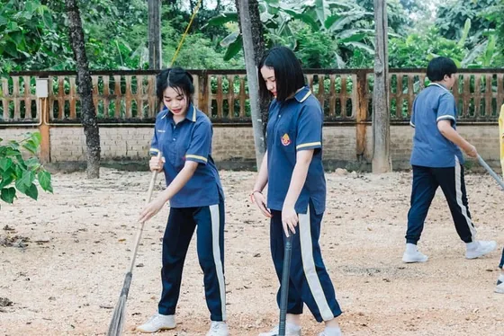
เข้าค่ายคุณธรรม
การเข้าร่วมกิจกรรม 'เข้าค่ายคุณธรรม' ถือเป็นประสบการณ์ที่สำคัญในการฝึกฝนวินัยและการรู้จักการอยู่ร่วมกับผู้อื่นในสังคมจำลอง การทำกิจกรรมต่าง ๆ ร่วมกับเพื่อนไม่เพียงแต่เป็นการฝึกฝนความอดทน แต่ยังเป็นการขัดเกลาจิตใจให้มีความรับผิดชอบและมีจิตสาธารณะ ดิฉันเชื่อมั่นว่าพื้นฐานของการเป็นนักบริหารที่ดี เริ่มต้นจากการมีคุณธรรมในจิตใจ ซึ่งประสบการณ์จากการเข้าค่ายในครั้งนี้ได้หล่อหลอมให้ดิฉันเป็นคนที่มีความพร้อมทั้งทางสติปัญญาและจริยธรรม พร้อมที่จะนำไปปรับใช้ในการดำเนินชีวิตและการทำงานอย่างซื่อสัตย์และเป็นธรรมต่อไปในอนาคต
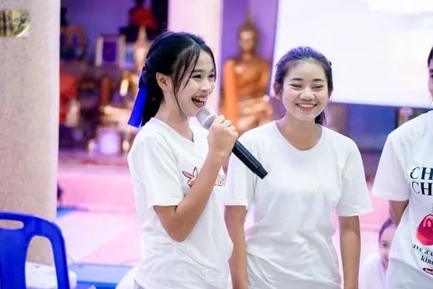
ผู้นำบรรยาย ค่ายคุณธรรม
การรับหน้าที่เป็น 'ผู้นำบรรยาย' ในกิจกรรมเข้าค่ายคุณธรรม เป็นประสบการณ์ที่ช่วยพัฒนาทักษะการสื่อสารและการพูดในที่สาธารณะของดิฉันได้อย่างโดดเด่น การถ่ายทอดเนื้อหาให้แก่ผู้ฟังจำนวนมากต้องอาศัยทั้งความเตรียมพร้อม การเรียบเรียงความคิดที่ชัดเจน และการสร้างความน่าเชื่อถือผ่านทางบุคลิกภาพ ประสบการณ์นี้ทำให้ดิฉันเรียนรู้ที่จะควบคุมอารมณ์และแก้ไขปัญหาเฉพาะหน้า รวมถึงการใช้พลังของการพูดเพื่อสร้างแรงบันดาลใจ (Inspirational Speaking) ให้แก่ผู้อื่น ซึ่งเป็นทักษะที่ดิฉันมีความมุ่งมั่นที่จะนำมาปรับใช้ในการสื่อสารเชิงกลยุทธ์และการเป็นผู้นำทีมงานที่มีประสิทธิภาพในคณะวิทยาการจัดการต่อไป
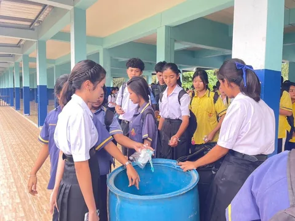
รณรงค์เก็บขยะในโรงเรียน
การเข้าร่วมกิจกรรม 'รณรงค์เก็บขยะในโรงเรียน' เป็นการตอกย้ำให้เห็นว่าความรับผิดชอบต่อสิ่งแวดล้อมสามารถเริ่มต้นได้จากจุดเล็ก ๆ ภายในองค์กร กิจกรรมนี้สอนให้ดิฉันเห็นความสำคัญของการจัดการสภาพแวดล้อม และการสร้างนิสัยที่ดีให้เกิดขึ้นในหมู่เพื่อนนักเรียน การเป็นผู้นำในการรณรงค์แม้ในเรื่องพื้นฐาน ช่วยปลูกฝังให้ดิฉันตระหนักถึงบทบาทของนักบริหารที่ต้องใส่ใจในรายละเอียดเล็ก ๆ น้อย ๆ เพื่อส่งเสริมให้เกิดความยั่งยืนภายในองค์กร (Organizational Sustainability) ซึ่งเป็นทัศนคติที่ดิฉันพร้อมจะนำไปประยุกต์ใช้ในการสร้างสรรค์พื้นที่ทำงานที่สะอาด เป็นระเบียบ และเอื้อต่อการทำงานอย่างมีประสิทธิภาพต่อไป
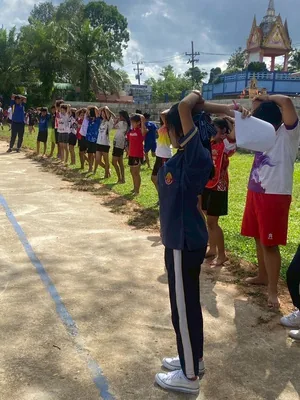
ผู้นำน้อง ๆ บริหารร่างกาย
การรับบทบาทเป็น 'ผู้นำน้อง ๆ บริหารร่างกาย' ก่อนเริ่มทำกิจกรรมต่าง ๆ เป็นหน้าที่ที่ดิฉันภูมิใจ เพราะสะท้อนถึงการได้รับความไว้วางใจให้เป็นผู้ดูแลความพร้อมของทีม การนำกิจกรรมในครั้งนี้สอนให้ดิฉันรู้จักการวางแผนและการสั่งการที่ชัดเจน รวมถึงการสร้างแรงจูงใจให้ผู้อื่นมีส่วนร่วมอย่างพร้อมเพรียง ดิฉันเชื่อมั่นว่าทักษะเหล่านี้เป็นพื้นฐานสำคัญของภาวะผู้นำ (Leadership) ที่ดี ซึ่งต้องประกอบด้วยความใส่ใจ ความเข้มแข็ง และการเป็นแบบอย่างที่ดีในการปฏิบัติงานให้แก่ผู้อื่น
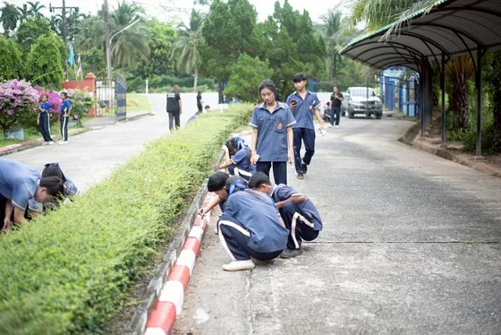
รณรงค์เก็บขยะลดโลกร้อน
การเข้าร่วมกิจกรรม 'รณรงค์เก็บขยะลดโลกร้อน' ไม่เพียงแต่เป็นการดูแลความสะอาดในสถานศึกษา แต่เป็นความมุ่งมั่นของดิฉันในการส่งเสริมจิตสำนึกด้านสิ่งแวดล้อม (Environmental Awareness) ให้เกิดขึ้นอย่างเป็นรูปธรรม กิจกรรมนี้แสดงให้เห็นว่าการเปลี่ยนแปลงที่ยิ่งใหญ่สามารถเริ่มต้นได้จากการร่วมมือกันในระดับชุมชนขนาดเล็ก ดิฉันตระหนักดีว่าในฐานะนักบริหารรุ่นใหม่ ความยั่งยืน (Sustainability) ไม่ใช่เพียงเรื่องของนโยบาย แต่เป็นความรับผิดชอบที่ต้องเริ่มจากการลงมือทำด้วยตนเอง เพื่อมุ่งสู่การสร้างสังคมและองค์กรที่เป็นมิตรต่อสิ่งแวดล้อมในอนาคต
เกียรติบัตร
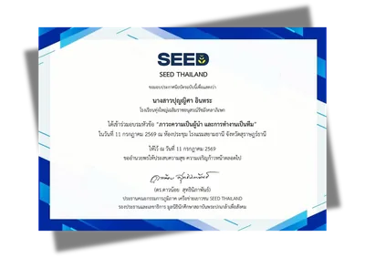
ดิฉันได้เข้าร่วมโครงการอบรมเชิงปฏิบัติการในหัวข้อ 'ภาวะความเป็นผู้นำ และการทำงานเป็นทีม' กิจกรรมในครั้งนี้ช่วยให้ดิฉันเข้าใจบทบาทของการเป็นผู้นำที่แท้จริง ไม่ใช่เพียงการสั่งการ แต่คือการสื่อสารและการรับฟังเพื่อสร้างความร่วมมือภายในทีม นอกจากนี้ยังได้ฝึกทักษะการตัดสินใจและการแก้ไขปัญหาในสถานการณ์จำลอง ซึ่งดิฉันมั่นใจว่าจะสามารถนำความรู้และทักษะเหล่านี้ไปประยุกต์ใช้เพื่อสร้างความสำเร็จในการทำงานร่วมกับผู้อื่นในอนาคตได้อย่างมีประสิทธิภาพ
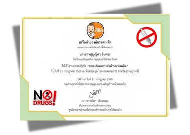
กิจกรรมนี้ไม่เพียงแต่ให้ความรู้เกี่ยวกับโทษของสารเสพติด แต่ยังทำให้ดิฉันได้เห็นถึงความสำคัญของการเป็นกระบอกเสียงและการมีส่วนร่วมในการสร้างภูมิคุ้มกันให้แก่เยาวชนและสังคม ดิฉันมีความตั้งใจที่จะนำความรู้ที่ได้รับไปเป็นส่วนหนึ่งในการขับเคลื่อนสังคมที่ปลอดภัย และพร้อมที่จะเป็นแบบอย่างที่ดีในการใช้ชีวิตอย่างสร้างสรรค์และห่างไกลจากอบายมุข
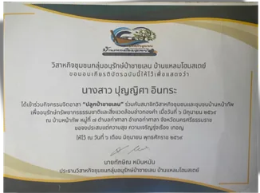
กิจกรรมในครั้งนี้ทำให้ดิฉันได้ตระหนักถึงความสำคัญของการอนุรักษ์ทรัพยากรธรรมชาติและสิ่งแวดล้อม ซึ่งเป็นรากฐานที่สำคัญของความยั่งยืน การได้ร่วมมือกับคนในชุมชนบ้านหน้าทับไม่เพียงแต่ช่วยฟื้นฟูระบบนิเวศในท้องถิ่น แต่ยังช่วยหล่อหลอมให้ดิฉันเข้าใจถึงพลังของการทำงานร่วมกันและการมีความรับผิดชอบต่อสิ่งแวดล้อม ซึ่งเป็นแนวคิดที่ดิฉันมุ่งมั่นจะนำมาปรับใช้ในการบริหารจัดการธุรกิจอย่างยั่งยืนในอนาคต
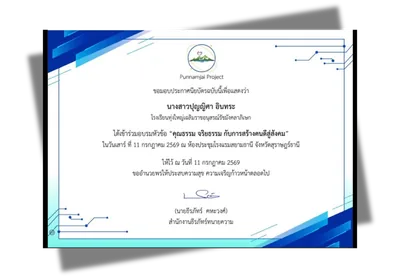
เป็นประสบการณ์ที่ช่วยขัดเกลาความคิดและมุมมองต่อการอยู่ร่วมกันในสังคม การอบรมในครั้งนี้ทำให้ดิฉันตระหนักว่า ในการเป็นนักบริหารที่ประสบความสำเร็จ นอกเหนือจากความรู้ความสามารถแล้ว จริยธรรมและการมีหัวใจที่ใส่ใจผู้อื่น คือหัวใจสำคัญที่จะนำพาองค์กรไปสู่ความยั่งยืน ดิฉันเชื่อมั่นว่าการบ่มเพาะตนเองด้วยคุณธรรมตั้งแต่วันนี้ จะเป็นรากฐานที่แข็งแกร่งในการสร้างสรรค์งานบริหารที่โปร่งใสและสร้างประโยชน์ให้แก่สังคมในอนาคต